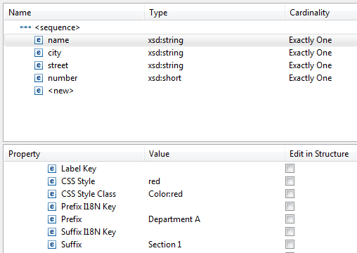

At the bottom of the Composite property page, a table tree view is available to modify predefined annotations for all elements of the type.
In the Storage section, you can set and change the type how the data is stored.
Optionally set the values for Indexing and Persistence in the Property column. By default all data fields in the structure are persisted and indexed.
Indexing: choose between Indexed and Not Indexed.
A field being indexed results in the creation of a corresponding row for the field's value in the table STRUCTURED_DATA_VALUE in the audit trail database. By setting some fields to Not Indexed the size of the table can be kept effectively smaller. Thus, to keep the table size small, only fields that are the basis for descriptors or are candidates for DataFilters in queries should be indexed.
Persistence: choose between Persistent and Transient.
Please note that setting Persistence to Transient overrules the Indexing setting. A field that is transient is never indexed and never saved. It allows your structured data to conform to existing XSDs while optimizing the footprint of the structure in the audit trail database.
To delete values set for Indexing or Persistence, right-click on the field and select Delete, as shown in the following screenshot:
Figure: Clearing a Value.
To add an additional column Indexing in the structured table with indexing information to the attributes pane, enable the checkbox in the Edit in Structure column as shown in the following screenshot:
Figure: Enable Indexing for Edit in Structure.
The additional column vanishes as soon as the checkbox is disabled or a field is selected which does not have the property set.
To add an additional column Persistence in the structured table with persistence information to the attributes pane, enable the checkbox in the Edit in Structure column as shown in the following screenshot:
Figure: Enable Persistence for Edit in Structure.
The additional column vanishes as soon as the checkbox is disabled or a field is selected which does not have the property set.
In case Change all is selected, changing one entry for Persistence or Indexing either in the Value column or in the according structured table columns, will change the value for all fields.
Figure: Enable Change all to reflect value on all entries.
You can define certain properties to control each field of structured data. These properties influence how the field is displayed or used in the Stardust Portal.
For details on structured data fields represented in the Portal, refer to section Manual Activity Panel for Structured Data with Field Level Properties of chapter Working with interactive Activity Panels in the Portal documentation.
Figure: Structured Data - Field Level Properties
You can define the following field level properties for a structured data:
| Property | Value |
|---|---|
| Show Structure Description | Yes / No |
| Read Only | Yes / No |
| Show Thousands Separator | Yes / No |
| Mandatory | Yes / No |
| Label | any string as label |
| Label Key | any string used as key for the label in the properties bundle |
| CSS Style | CSS style with value (<css style>:<value>) |
| CSS Style Class | the class name from the stylesheet file |
| Prefix I18N Key | any string used as key for the prefix in the properties bundle |
| Prefix | any string as prefix |
| Suffix I18N Key | any string used as key for the suffix in the properties bundle |
| Suffix | any string as suffix |
| String Input Type | Text Input or Text Area |
| Rows | number of rows to be displayed in the Stardust Portal |
| Columns | number of columns to be displayed in the Stardust Portal |
| Boolean Readonly Input Type | Checkbox or Text Output |
Refer to the following sections for details on these properties:
This property determines, if the description of the structured data should be displayed or not.
If you select Yes for this property, the field becomes read-only. In case an In-Out data mapping is provided for this field, it gets overridden and the field remains read-only.
To make large number fields readable, you can select this check box to add grouping separator (comma) to a structured data field. Note that this is supported only for numeric descriptors based on Structured Data.
If you set this property to Yes, the activity cannot be completed until you specify a value for that field.
The specified text entered as String is displayed as label in the Stardust Portal. Note that if property Label Key is provided, Label is overridden.
For example, enter Customername as value for the Label property for a structured type entry name, as shown below:
Figure: Setting a Label property
In the Portal UI, the label for the name property of this structured type is displayed as Customername in a manual activity having this structured data type as input data mapping:
Figure: The customized label is displayed in the Portal
This property specifies a key, which is set in the according language bundle properties file. The format is <key string> = <specify value>, e.g. <structured type>.<field>.<label>.<key>. The value for the key will be read from the properties file and displayed in the Stardust Portal in the specified language as label for the structured data field.
For example, if you add Person.name.label.key as string for the Label Key as shown in the following screenshot:
Figure: Setting a Label Key property
Enter the following in the modeler language bundle properties file, in this example the German bundle, and save it:
Person.name.label.key=Kundenname
In the Portal UI, the label for the name property of this structured type is displayed as Kundenname in a manual activity having this structured data type as in/out data mapping, in case the Browser language is set to German.
Figure: Internationalized Label
This property specifies a specific style for the field. Enter the style and a value in the following format: <css style>:<value>. For example, if you specify Color:Red for a field, the value for this field is taken in red color.
Figure: Entry field with red color
If you have a stylesheet file you use in the Portal, you can reference a specific class in this stylesheet that you like to use in your entry field. The stylesheet file must be included in the skin selected for the Portal in the Configuration Panel in the Stardust Portal. For details on how to create and use custom skins refer to chapter Creating and Using Custom Skins in the Portal documentation.
For example if your stylesheet contains the following class:
.democlass {
font-family: Geneva, Arial, Helvetica, sans-serif;
font-size: 13px;
color: blue0;
font-style: normal;
line-height: 18px;
font-weight: normal;
}
you can enter the value democlass for the property CSS Style Class to be used as reference. Then you can use a value from this class, e.g. fornt-weight and set it in CSS Style. In the following example, we like to have a bold font-weight in the entry field:
Figure: Setting style and style class
In the Portal, entered text in this entry field is displayed in bold now:
Figure: Entry field text displayed in bold
The specified text entered as String for property Prefix is displayed as prefix in the Stardust Portal. Note that if property Prefix I18N Key is provided, Prefix is overridden.
The specified text entered as String for property Suffix is displayed as suffix in the Stardust Portal. Note that if property Suffix I18N Key is provided, Suffix is overridden.
For example, enter Department A as value for the Prefix property and Section 1 as value for the Suffix property for a structured type entry name, as shown below:

Figure: Enter a string for Prefix and Suffix
In the Portal UI, a manual activity, having a data as in/output of the according structured data type, the name field is displayed with prefix Department A and suffix Section 1:
Figure: Prefix and Suffix displayed in the Portal
This property specifies a key, which is set in the according language bundle properties file. The format is <key string> = <specify value>, e.g. <structured type>.<field>.<prefix>. The value for the key will be read from the properties file and displayed in the Stardust Portal in the specified language as prefix for the structured data field.
This property specifies a key, which is set in the according language bundle properties file The format is <key string> = <specify value>, e.g. <structured type>.<field>.<suffix>. The value for the key will be read from the properties file and displayed in the Stardust Portal in the specified language as suffix for the structured data field.
For example, add Person.name.prefix as string for the Prefix I18N Key and Person.name.suffix as string for the Suffix I18N Key as shown in the following screenshot:
Figure: Setting I18N prefix and suffix keys
Add the following keys to the modeler language bundle properties file, in this example the German bundle, and save it:
Person.name.prefix = Abteilung A Person.name.suffix = Sektion 1
In the Portal UI, the prefix for the name property of this structured type is displayed as Abteilung A, the suffix as Sektion 1 in a manual activity having this structured data type as input data mapping, in case the Browser language is set to German.
Figure: Internationalized prefix and suffix displayed in the Portal
If Text Input is selected for the String Input Type property, the following fields Rows and Columns become invalid. If Text Area is selected, you can specify more characters. For example, you can specify the complete address of home and office.
Figure: Text Area as input field
The Rows property specifies the number of rows to be displayed. If property String Input Type is set to Text Area, only the specified number of rows are displayed.
The Columns property specifies the number of columns to be displayed. If property String Input Type is set to Text Area, only the specified number of columns are displayed.
The type of the field should be xsd:boolean. If Checkbox is selected, a checkbox appears next the field.
Figure: Boolean field
If Text Output is selected, the values True or False are displayed. For Text Output, you need to provide an Out-data mapping for the first activity and an In-data mapping should be provided to the following activity.